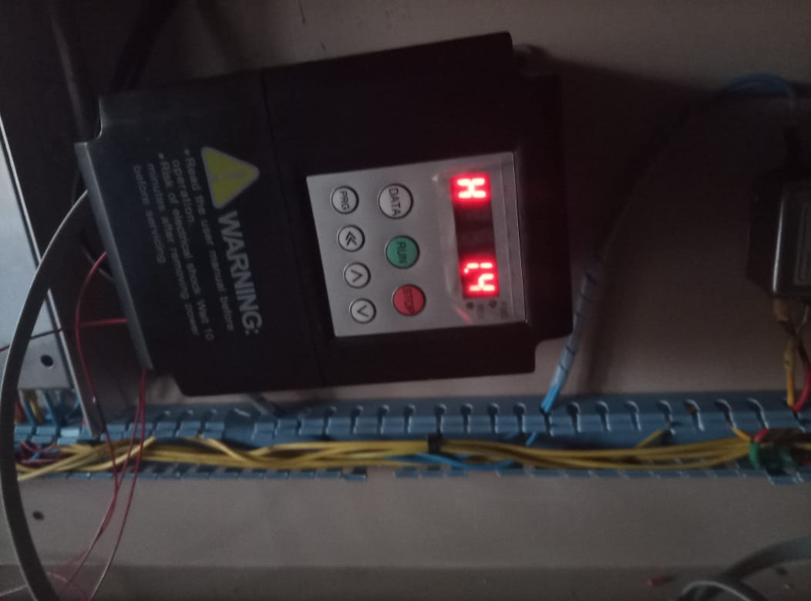
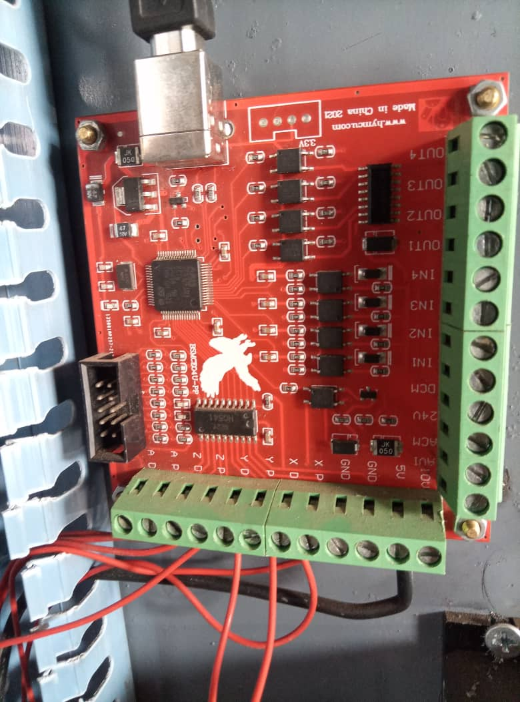

01
CNC Motion & Diagnostic Tester
Portable test platform for X, Y and Z motion, stepper drivers, spindle control, sensors and CNC input/output diagnostics.
Hello, I'm
I work with electrical systems, automation, CNC technology, networking, security systems and technical solutions. I enjoy turning technical ideas into real working systems.
Automation • Electrical • Technology
01 — About Me
I'm a Technical Support Engineer with experience working with electrical systems, automation, security systems, networking and technical installations.
My interests include PLC systems, CNC machines, VFDs, electrical control panels, embedded systems and home automation.
I enjoy understanding how systems work, finding problems and creating practical solutions.
[Share your personal journey, what inspired you to work in this field, and what drives your passion for technology and engineering]
02 — Skills
Electrical wiring, control panels, protection devices and troubleshooting.
PLC systems, sensors, relays, automation and control systems.
CNC machines, spindle systems, VFDs and machine wiring.
CCTV installation, alarms and security system configuration.
Ethernet networks, internet systems, NVRs and network troubleshooting.
ESP32, Arduino, sensors and smart automation projects.
03 — Certifications
25 February 2026
Certificate of completion covering artificial intelligence concepts and emerging technologies.
04 — Technical Portfolio
Industrial electricity technician focused on electrical installation, motor control, CNC systems, automation, troubleshooting and electronics development.
Portable test platform for X, Y and Z motion, stepper drivers, spindle control, sensors and CNC input/output diagnostics.
Investigated spindle start, stop and speed control through digital signals, analog references and VFD terminal configuration.
Applied star-delta starting principles with contactors, overload protection, timers, interlocking and emergency-stop control.
Isolated faults by checking supplies, winding pairs, pulse and direction signals, driver outputs and motor holding behavior.
Organized power and 24 V control sections with protection, terminals, grounding, isolation and emergency-stop considerations.
Developing PLC fundamentals, ladder logic and ESP32-based electronics with PCB design, MOSFET switching and logic-level interfaces.
Every system is approached as a complete working chain, from power and protection to signals, loads and safe operation.
Review wiring, components and the intended system sequence.
Verify power, continuity, control signals and references.
Separate the system into sections to locate the real fault.
Apply a safe, maintainable and properly documented solution.
05 — Work Gallery
A growing visual record of the machines, control systems and technical work behind my projects.

Technical equipment and field work

Technical equipment and field work

Technical equipment and field work
06 — CNC & VFD Systems
Separate examples of the control hardware I study, configure and troubleshoot in automation projects.

Motor speed control, wiring, parameter configuration and signal testing.

Axis control, input and output connections, sensors and motion-system integration.
07 — On-Site Work
A small selection of electrical installation, CCTV monitoring and control-panel work completed on site.


08 — Experience
Worked on technical installations and troubleshooting involving CCTV, fire systems, alarms, electrical systems and other technical solutions.
Completed technical secondary education and continued developing practical engineering and technology skills.
Continuing education while developing practical technical projects and professional experience.
09 — Curriculum Vitae
Kigali, Rwanda
Hands-on technician with experience in electrical systems, technical support, automation and field troubleshooting.
Skilled in installation, fault diagnosis, control systems, CCTV, networks and practical technical development.
Download Full CVHappy Light Tech
Technical Solution Company
Kinihira TSS · ULK University
English · Kinyarwanda
10 — Achievements
2024
Earned the professional title of Technician after completing secondary technical education at Kinihira TSS.
2024
Received a technical diploma certificate, building a foundation in electrical systems and practical technology.
25 February 2026 · Atingi
Completed the Atingi course, An Introduction to AI & Emerging Technologies.
View Certificate11 — Testimonials
"[Client testimonial or feedback about your work, skills, and professionalism]"
"[Client testimonial or feedback about your work, skills, and professionalism]"
"[Client testimonial or feedback about your work, skills, and professionalism]"
12 — Blog & Articles
[Brief description or excerpt of the article. This is a placeholder for your technical insights, tutorials, or industry thoughts.]
[Brief description or excerpt of the article. This is a placeholder for your technical insights, tutorials, or industry thoughts.]
[Brief description or excerpt of the article. This is a placeholder for your technical insights, tutorials, or industry thoughts.]
13 — Contact
I'm interested in technical projects, engineering opportunities and practical technology solutions.